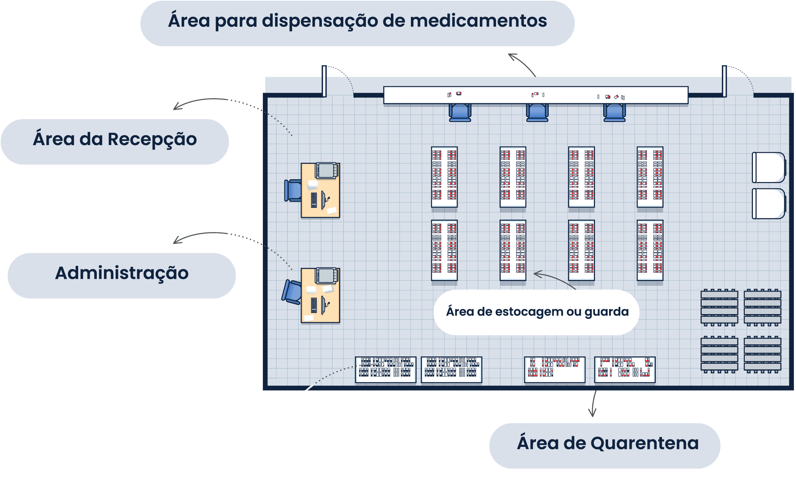

Clique nas áreas que compõem a farmácia para conhecê-las.
ÁREA DE EXPEDIÇÃO
Características
Área destinada à separação, conferência e liberação dos materiais.
Equipamentos e materiais necessários
Nas farmácias, essa área precisa de uma mesa e cadeira para acomodar os itens a serem
entregues
aos usuários.
x
ÁREA DE RECEPÇÃO
Características
Área destinada ao recebimento e à conferência de produtos. Deve ficar localizada próximo à
porta
principal e conter normas e procedimentos escritos e fixados em local visível descrevendo
todas as etapas da conferência
dos itens.
Equipamentos e materiais necessários
Para realizar o recebimento será necessária mesa, materiais cortantes
como estilete e tesoura, e as listas de pedidos de medicamentos e materiais para
conferência.
x
ÁREA ADMINISTRATIVA
Características
Considere sempre uma área para as atividades operacionais. Recomenda-se que essa área fique
localizada
preferencialmente na entrada, para melhor acompanhamento das ações e do fluxo de pessoas e
produtos.
Equipamentos e materiais necessários
Este espaço precisa de mesa, cadeira, computador e materiais de escritório.
x
ÁREA DE ESTOCAGEM OU GUARDA
Características
As áreas devem ser subdivididas para armazenar os diversos tipos de materiais segundo as
exigências de
conservação de cada item. Atenção às instalações elétricas, aos equipamentos e aos
acessórios necessários a essa área.
Cuidado com portas e janelas, evitando a entrada de animais e incidência direta de luz
solar.
Equipamentos e materiais necessários
Existem diversos equipamentos para o armazenamento, tais como: estrados e pallets, estantes
e prateleiras,
climatizadores de ar, termômetros e higrômetros, computador com sistema de controle de
estoque, geladeira, armários com
chave.
x
ÁREA DE PRODUTOS REJEITADOS (QUARENTENA)
Características
Local destinado à guarda de produtos vencidos ou sob suspeita e com alterações. Essa área
acondiciona
esses materiais até a destinação específica.
Equipamentos e materiais necessários
Separe uma estante ou prateleiras
sinalizadas para esses itens inservíveis. Sinalize bem e alerte toda a equipe sobre o local.
Tenha rotinas para a cada
tempo dar a destinação correta para esses materiais.
x